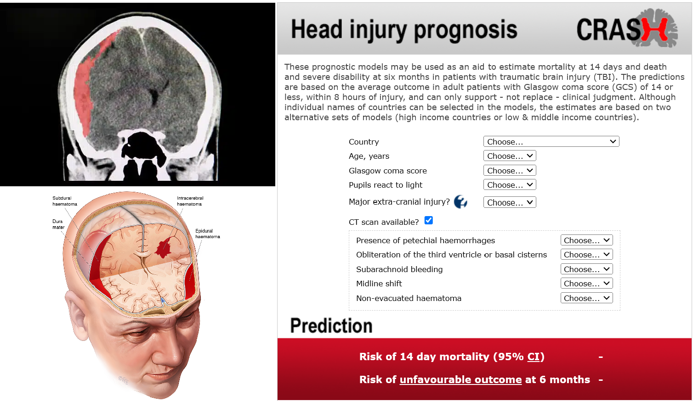
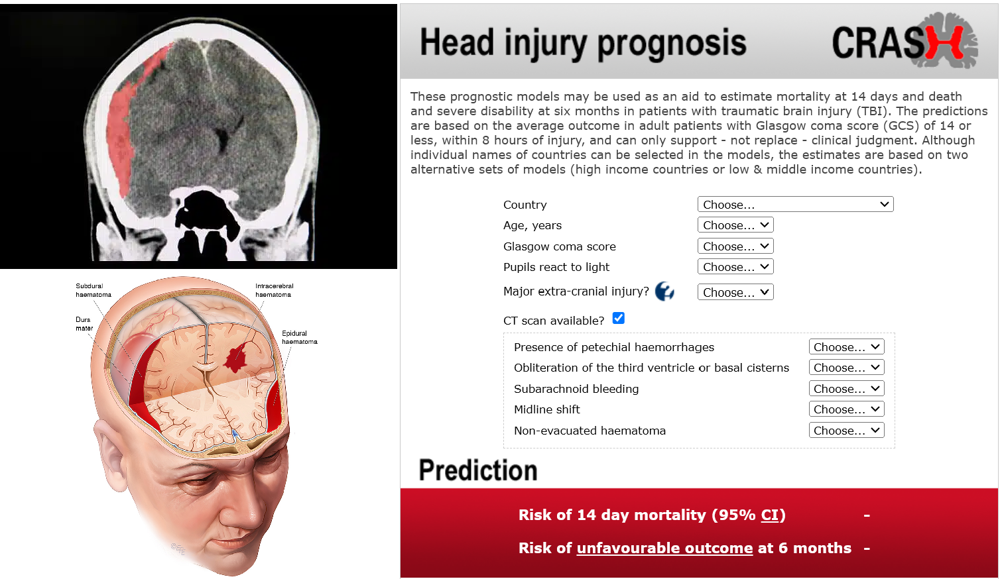

Supervisory Team
Massoud Zolgharni, Professor of Computer Vision, UWL
Nasim Dadashi Serej, Lecturer in Artificial Intelligence, UWL
Clinical Collaborators
Hosseinali Khalili, Associate Professor of Neurosurgery, Trauma Research Center, Department of Neurosurgery, SUMS
For more information about our existing work, please visit here
Proposed PhD Project
Background:
Traumatic brain injury (TBI) presents complex challenges in clinical management, necessitating accurate prognostic tools to guide treatment decisions and optimise patient outcomes. Accurate outcome prediction is crucial in TBI management as it helps clinicians determine appropriate treatment strategies, estimate prognosis, and set realistic expectations for patients and their families. However, the complexity and heterogeneity of TBI cases require sophisticated prognostic models that can integrate various clinical and imaging data to provide reliable predictions. Hence, the development of a TBI calculator is essential to standardise prognostic assessment and improve clinical decision-making in TBI care.

Research Gap
There is a critical need for a TBI prediction model that integrates CT imaging to maximise accuracy, adapts to diverse patient cohorts through continuous learning, and offers a user-friendly, secure interface. Unlike existing TBI calculators that require clinicians to manually input measurements from CT scans, this proposal advocates for providing the entire CT scan to the model, allowing it to autonomously extract and analyse relevant features. This approach aims to streamline the prediction process and enhance the model's ability to leverage comprehensive imaging data for improved prognostication. Currently, there exists a critical gap in TBI outcome prediction models, particularly in incorporating imaging data and enabling local adaptation to diverse patient populations, hindering their effectiveness in clinical practice.
Research Hypothesis:
By integrating imaging data from CT scans and incorporating mechanisms for local adaptation, we hypothesise that we can significantly enhance the accuracy and clinical relevance of TBI prognostic models, leading to improved patient outcomes.
Aim:
Our vision is to develop an innovative AI framework that leverages both CT imaging and clinical data for accurate TBI outcome prediction. This framework will be delivered through a user-friendly desktop application allowing clinicians to input patient data and receive real-time predictions. A core strength of the framework is its local adaptability; clinicians can retrain the model with their own data, optimising its performance for their patient population. The project will rigorously validate the framework's accuracy and reliability across diverse datasets and assess the potential impact of using both imaging data and local adaptation on improving clinical decision-making and patient outcomes.
Plan:
This project will employ a multi-faceted approach to develop a robust and adaptable TBI outcome prediction model. We will aggregate a large, diverse dataset of TBI patient data, including clinical variables, treatment details, and CT scans. Advanced machine learning (e.g., deep learning), will be employed for model construction and extracting key features from CT scans. A user-centric desktop application will be developed for secure data input, image handling, and real-time outcome prediction. To facilitate collaborative improvement, the application will include a standardised, privacy-focused mechanism for users to export anonymized patient data. This data will centrally power the continuous refinement of the global model. Rigorous validation on diverse datasets will assess performance, including comparisons to existing calculators. Transfer learning techniques will enable local adaptation for optimal performance in specific clinical settings..
Candidate profile:
We are seeking highly motivated candidates with a strong background in computer science, machine
learning, or a related field. The ideal candidate should possess solid programming skills. Strong
analytical skills,
problem-solving abilities, and excellent communication and collaboration skills are essential for
success in this PhD position.
Further information:
This PhD position offers a supportive research environment, access to state-of-the-art facilities,
and the opportunity to collaborate with leading researchers in the field. The successful candidate
will receive a competitive stipend and opportunities for conference participation and publication
of research findings.
Application details:
To apply for this position, interested candidates should submit a detailed CV, a cover letter
outlining their research interests and motivation for pursuing a PhD.
Shortlisted candidates will be invited for an interview to further discuss their research ideas
and suitability for the position.
Expected start date: January, May, and September of each academic year.
Duration: This is a three-year position
For more information about the project, please contact the supervisory team.
